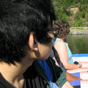
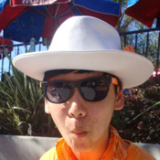
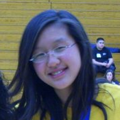

About us
Kyle, Philson, Justin, and Sophia are all seniors at Franklin High School.
KyleOutside of MESA, Kyle likes to spend his time playing with his three dogs and doing community service around Sacramento with Key Club. This will be his third year in MESA, now the club’s secretary. His projects are generally the bridge aspect of the competition and math tests (and of course websites).
PhilsonPhilson likes to write short stories and draw when he’s not at school. He’s been in MESA for two years, and his favorite events are the math competitions and designing websites like this one.
JustinJustin enjoys building all kinds of aircraft for Franklin High School's Science Olympiad team. Having been a member of MESA for almost 2 years, he’s been involved mostly with building gliders. Outside of school he likes to play various games and read. This year he was elected as the club’s treasurer.
SophiaFinally, Sophia spends a good amount of her time studying. She’s been a part of MESA for all four years of her high school career, earning the position of Secretary last year and President this year. Having been here for so long (she was even in MESA in elementary school), she’s participated in tons of projects ranging from the egg drop to gliders.
The four have all experienced in some form or another each kind of project offered during their time with MESA, placing in many of them. As such, MESA has been able to provide them important skills in teamwork, responsibility, and problem solving. As our world is plagued with a myriad of problems, from overpopulation to global warming to war, the skills gained from these experiences will be instrumental in helping others find a better future.